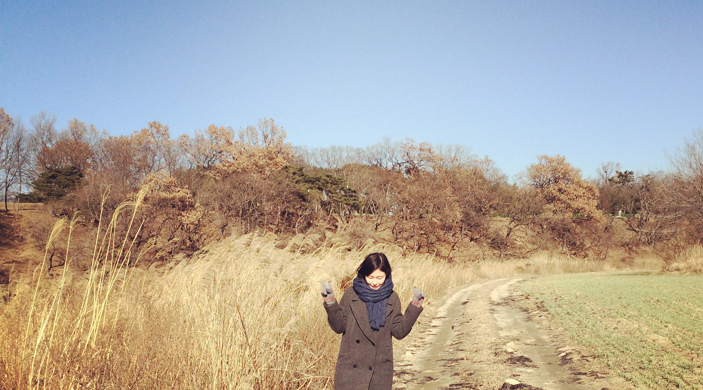

Kyungju Travel
2014.12.26-28
경주는 사실 볼거라고는 역사적인 유적지들로만 가득찬, 단순히 수학여행으로 오기 적당한 곳이라고 생각했다. 사실 자유여행으로 오는 경주는 자전거를 빌려서 돌아다니기 좋은 봄, 여름이 제일 좋다고들 한다. 하지만 나는 어쩌다가 겨울에, 그것도 12월말에 경주를 가게 된 것일까. 부산도 가봤고 전주도 가봤고 그 다음은 어디를 갈까 고민하다가 그냥 경주를 가게 되었다. 특별한 이유가 있어서는 아니었다. 경주 지도에 엄청 큰 호수가 있는 걸 보게 되었고 이렇게나 큰 호수가 있네! 하며 그냥 큰 호수 보문호를 보고 싶어서 경주로 갔다. 6학년때 수학여행 이후로 처음 가게 된 경주. 겨울 경주 여행은 후기도 많이 없어서 도대체 어떤 모습일지 궁금했다. 수학여행 이후로 처음 다시 간 경주는 유명세에 비해 굉장히 횡했다. 그래도 찾아놓은 먹을 거리나 음식점 등을 가보면 좋을 것 같아서 간 성동시장에서 만난 우엉 김밥과 염통 꼬치를 먹는 순간 경주에 잘왔다 싶었다. 나는 역시나 먹을 것에 약하다. 그때부터 그냥 발길 가는 대로 걷기 시작했다. 남들이 보면 왜 저런 곳에서 사진을 찍고 있는 거지 싶은 쌈밥집 주차장 갈대밭에서 머물며 사진을 찍고 놀고 아무도 가지 않는 길로 지도만 보고 교촌마을을 가다가 한 겨울에도 아름다움을 자랑하는 대나무 밭을 마주하기도 했다. 또 겨울이라 말라버린 밭에서 사진을 찍기도 했다. 그냥 그렇게 한적한 도시를 느끼고 자유롭게 거니는게 좋았다. 사실 허무하게도 맛있는 음식은 처음 먹었던 염통 꼬치와 우엉 김밥이 전부였다. 그래도 좋았다.
- 
-

-